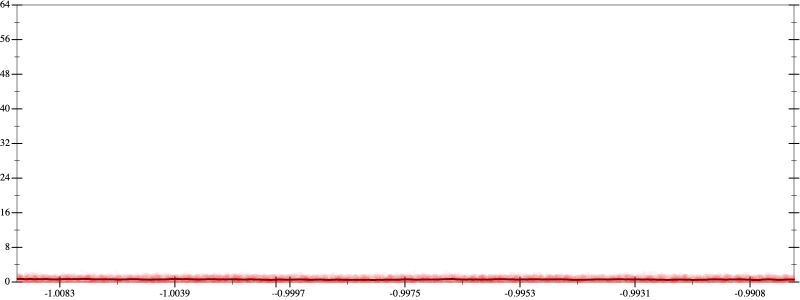
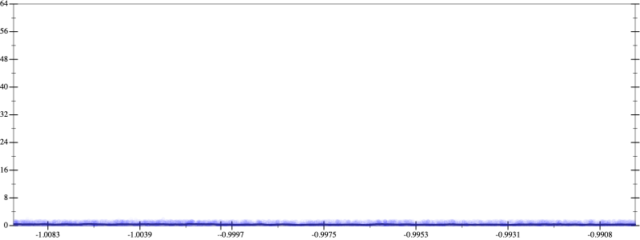
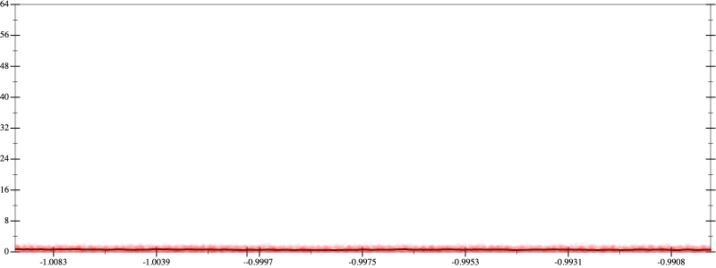
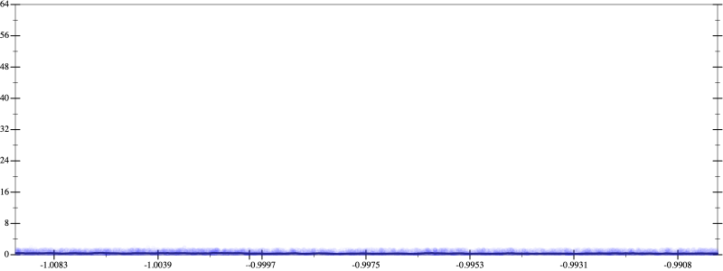

Initial program 0.6
\[\left(\left(\left(\left(\left(\left(1.0 + -7.0 \cdot x\right) + 10.5 \cdot \left(x \cdot x\right)\right) + -5.833333 \cdot \left(\left(x \cdot x\right) \cdot x\right)\right) + 1.458333 \cdot \left(\left(\left(x \cdot x\right) \cdot x\right) \cdot x\right)\right) + -0.175 \cdot \left(\left(\left(\left(x \cdot x\right) \cdot x\right) \cdot x\right) \cdot x\right)\right) + 0.009722 \cdot \left(\left(\left(\left(\left(x \cdot x\right) \cdot x\right) \cdot x\right) \cdot x\right) \cdot x\right)\right) + -0.000198 \cdot \left(\left(\left(\left(\left(\left(x \cdot x\right) \cdot x\right) \cdot x\right) \cdot x\right) \cdot x\right) \cdot x\right)\]
Applied simplify0.5
\[\leadsto \color{blue}{\left(\left(x \cdot x\right) \cdot \left(10.5 + -5.833333 \cdot x\right) + \left(x \cdot -7.0 + 1.0\right)\right) + \left(\left(\left(x \cdot x\right) \cdot \left(x \cdot x\right)\right) \cdot \left(1.458333 + -0.175 \cdot x\right) + \left({x}^{3} \cdot {x}^{3}\right) \cdot \left(-0.000198 \cdot x + 0.009722\right)\right)}\]
- Using strategy
rm Applied add-log-exp0.5
\[\leadsto \left(\left(x \cdot x\right) \cdot \left(10.5 + -5.833333 \cdot x\right) + \color{blue}{\log \left(e^{x \cdot -7.0 + 1.0}\right)}\right) + \left(\left(\left(x \cdot x\right) \cdot \left(x \cdot x\right)\right) \cdot \left(1.458333 + -0.175 \cdot x\right) + \left({x}^{3} \cdot {x}^{3}\right) \cdot \left(-0.000198 \cdot x + 0.009722\right)\right)\]
Applied add-log-exp0.5
\[\leadsto \left(\color{blue}{\log \left(e^{\left(x \cdot x\right) \cdot \left(10.5 + -5.833333 \cdot x\right)}\right)} + \log \left(e^{x \cdot -7.0 + 1.0}\right)\right) + \left(\left(\left(x \cdot x\right) \cdot \left(x \cdot x\right)\right) \cdot \left(1.458333 + -0.175 \cdot x\right) + \left({x}^{3} \cdot {x}^{3}\right) \cdot \left(-0.000198 \cdot x + 0.009722\right)\right)\]
Applied sum-log0.5
\[\leadsto \color{blue}{\log \left(e^{\left(x \cdot x\right) \cdot \left(10.5 + -5.833333 \cdot x\right)} \cdot e^{x \cdot -7.0 + 1.0}\right)} + \left(\left(\left(x \cdot x\right) \cdot \left(x \cdot x\right)\right) \cdot \left(1.458333 + -0.175 \cdot x\right) + \left({x}^{3} \cdot {x}^{3}\right) \cdot \left(-0.000198 \cdot x + 0.009722\right)\right)\]
- Using strategy
rm Applied distribute-lft-in0.4
\[\leadsto \log \left(e^{\color{blue}{\left(x \cdot x\right) \cdot 10.5 + \left(x \cdot x\right) \cdot \left(-5.833333 \cdot x\right)}} \cdot e^{x \cdot -7.0 + 1.0}\right) + \left(\left(\left(x \cdot x\right) \cdot \left(x \cdot x\right)\right) \cdot \left(1.458333 + -0.175 \cdot x\right) + \left({x}^{3} \cdot {x}^{3}\right) \cdot \left(-0.000198 \cdot x + 0.009722\right)\right)\]
Applied exp-sum0.4
\[\leadsto \log \left(\color{blue}{\left(e^{\left(x \cdot x\right) \cdot 10.5} \cdot e^{\left(x \cdot x\right) \cdot \left(-5.833333 \cdot x\right)}\right)} \cdot e^{x \cdot -7.0 + 1.0}\right) + \left(\left(\left(x \cdot x\right) \cdot \left(x \cdot x\right)\right) \cdot \left(1.458333 + -0.175 \cdot x\right) + \left({x}^{3} \cdot {x}^{3}\right) \cdot \left(-0.000198 \cdot x + 0.009722\right)\right)\]
- Using strategy
rm Applied pow20.4
\[\leadsto \log \left(\left(e^{\left(x \cdot x\right) \cdot 10.5} \cdot e^{\left(x \cdot x\right) \cdot \left(-5.833333 \cdot x\right)}\right) \cdot e^{x \cdot -7.0 + 1.0}\right) + \left(\left(\left(x \cdot x\right) \cdot \color{blue}{{x}^{2}}\right) \cdot \left(1.458333 + -0.175 \cdot x\right) + \left({x}^{3} \cdot {x}^{3}\right) \cdot \left(-0.000198 \cdot x + 0.009722\right)\right)\]
Applied pow20.4
\[\leadsto \log \left(\left(e^{\left(x \cdot x\right) \cdot 10.5} \cdot e^{\left(x \cdot x\right) \cdot \left(-5.833333 \cdot x\right)}\right) \cdot e^{x \cdot -7.0 + 1.0}\right) + \left(\left(\color{blue}{{x}^{2}} \cdot {x}^{2}\right) \cdot \left(1.458333 + -0.175 \cdot x\right) + \left({x}^{3} \cdot {x}^{3}\right) \cdot \left(-0.000198 \cdot x + 0.009722\right)\right)\]
Applied pow-prod-up0.3
\[\leadsto \log \left(\left(e^{\left(x \cdot x\right) \cdot 10.5} \cdot e^{\left(x \cdot x\right) \cdot \left(-5.833333 \cdot x\right)}\right) \cdot e^{x \cdot -7.0 + 1.0}\right) + \left(\color{blue}{{x}^{\left(2 + 2\right)}} \cdot \left(1.458333 + -0.175 \cdot x\right) + \left({x}^{3} \cdot {x}^{3}\right) \cdot \left(-0.000198 \cdot x + 0.009722\right)\right)\]
 
